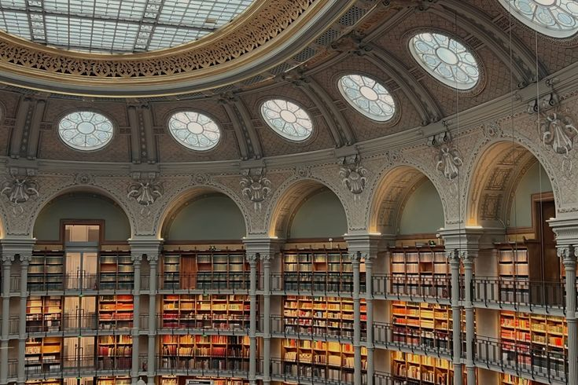

Qui sommes nous ?
Depuis plus de vingt ans, notre bibliothèque accueille les lecteurs de tous âges. Nous proposons des milliers d'ouvrages dans différents domaines : littérature, sciences, histoire, informatique et bien plus encore.

Bienvenue à la Bibliothèque Lumière, un espace dédié à la lecture, au savoir et à la découverte.
Le menu contient :
Qui sommes nous ?
Depuis plus de vingt ans, notre bibliothèque accueille les lecteurs de tous âges. Nous proposons des milliers d'ouvrages dans différents domaines : littérature, sciences, histoire, informatique et bien plus encore.
L'ETRANGER
L'Étranger d'Albert Camus raconte l'histoire de Meursault, un homme profondément indifférent au monde et aux conventions sociales, qui vit de manière purement détachée, même lors de la mort de sa mère. À la suite d'un concours de circonstances sur une plage d'Alger, il tue un Arabe sans motif réel et se retrouve projeté dans un procès absurde. Il y est finalement condamné à mort, moins pour son crime que pour son refus de feindre des sentiments et de se conformer aux attentes de la société.

LES 48 LOIS DU POUVOIR
Les 48 lois du pouvoir de Robert Greene est un guide pragmatique et amoral qui décortique les mécanismes de la manipulation, du contrôle et de l'influence à travers l'Histoire. S'appuyant sur les stratégies de figures historiques comme Machiavel ou Sun Tzu, l'auteur y liste quarante-huit préceptes stricts pour acquérir le pouvoir, s'en protéger ou écraser ses adversaires. C'est un ouvrage axé sur la froide stratégie comportementale, où la transparence est souvent vue comme une faiblesse et le secret comme une arme.

LES NUITS BLANCHES
Les Nuits blanches de Fiodor Dostoïevski est un roman court et poétique qui suit un jeune homme solitaire et rêveur errant dans les rues de Saint-Pétersbourg pendant les claires nuits d'été. Sa vie bascule lorsqu'il rencontre Nástenka, une jeune femme éperdue d'amour qui attend désespérément le retour de son fiancé parti depuis un an. Durant quatre nuits d'une rare intensité émotionnelle, le narrateur s'éprend d'elle en secret, trouvant un sens éphémère à sa solitude avant d'être brutalement ramené à sa réalité de "rêveur".
| Jours | Horaire |
| Lundi | 08h00-17h00 |
| Mardi | 08h00-17h00 |
| Mercredi | 08h00-17h00 |
| Jeudi | 08h00-17h00 |
| Vendredi | 08h00-17h00 |
| Samedi | 09h00-13h00 |
| Dimanche | fermer |
Découvrez davantage de livres sur le site de la Bibliothèque nationale de France.